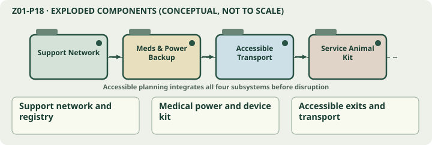

Z01-P18 · Survival fundamentals · New manuscript
Build an accessible emergency and evacuation plan
Account for mobility, sensory, medical, power and service-animal needs before an emergency disrupts daily support.
When it applies · Individuals and groups with disabilities, chronic medical conditions, older adults or temporary mobility limits in home or travel settings.
Equipment · Personal support network list, medication and dosage card, backup power or spare batteries, accessible transport contacts and service-animal supplies.

Actions
- Build a personal support network of at least three trusted contacts who know your plan, supply locations, mobility aids and communication preferences.[T10, T11]
- Arrange accessible evacuation transportation ahead of time and check whether local emergency management offers voluntary registries or utility priority-restoration lists.[T10, T13]
- Pack a go-bag and shelter-in-place kit with written prescriptions, device specs, backup power, spare eyewear or hearing batteries and service-animal food and water.[T10, T12]
Failure recognition · Assuming standard evacuation shelters, public buses or unassisted foot routes can accommodate wheelchairs, oxygen concentrators, deaf/blind alerting or service animals.[T10, ED]
Verify · Review and rehearse the plan with your support network, confirming backup power duration and two accessible exit routes from home or camp.[T10, T11, ED]
Stop or change course · If power-dependent medical equipment approaches reserve limits or accessible evacuation routes are threatened, activate emergency medical or local assistance early.[T10, T02, T13]
Evidence and editorial notes
- T02 · American Red Cross · First Aid Steps (current web edition)
- Section: First Aid Steps > Call 9-1-1 · Conditions: Lay emergency response to unresponsiveness, abnormal breathing or severe bleeding
Support: Activate EMS and get needed equipment. Follow dispatcher directions and act within training.
Limitations: Remote locations may delay EMS arrival, requiring sustained stabilization after activation. · Conflicting evidence: None; aligns with NPS-E.
Editorial note: Mandates early emergency activation and dispatcher adherence. · Specialist reviewer: EMS and wilderness medicine
Primary source · checked 2026-11-24 - T10 · FEMA / Ready.gov · People with Disabilities (current web edition)
- Section: People with Disabilities > Make a Plan and Build a Kit · Conditions: Individuals with mobility, sensory, medical, or power-dependent access and functional needs
Support: Build a personal support network, plan accessible evacuation transport, register voluntarily with local emergency registries where available, and plan backup power and spare supplies for medical devices, medications, and service animals.
Limitations: Local registry availability and utility priority-restoration policies vary by jurisdiction. · Conflicting evidence: None; extends generic preparedness plans to accessible requirements.
Editorial note: Directly addresses Z01 accessible emergency planning requirement. · Specialist reviewer: Accessible emergency management and disability preparedness
Primary source · checked 2026-11-24 - T11 · FEMA / Ready.gov · Make a Plan (current web edition)
- Section: Make a Plan > Family Emergency Communication Plan · Conditions: Households and traveling groups preparing for disruptions
Support: Record out-of-area contacts, local meeting places, medical/allergy summaries, and alternate communication channels (text vs voice) in paper and offline formats; practice the plan periodically.
Limitations: Cellular networks often congest during disasters while SMS or out-of-area contacts may still connect. · Conflicting evidence: None; complements outdoor trip-plan cards.
Editorial note: Anchors emergency communication protocols and group contingency plans. · Specialist reviewer: Emergency management and communications
Primary source · checked 2026-11-24 - T12 · FEMA / Ready.gov · Build a Kit (current web edition)
- Section: Build a Kit > Basic Disaster Supplies Kit and Maintenance · Conditions: Overnight and multi-day emergency readiness
Support: Assemble water, food, light, NOAA/battery radio, first aid, whistle, local maps, sanitation, medications, and backup power; inspect expiration dates and batteries regularly.
Limitations: Standard 72-hour kits do not cover extended multi-day isolation without replenishment or specialized cold/medical items. · Conflicting evidence: None; links kit readiness to periodic maintenance checks.
Editorial note: Supports equipment readiness, inspection, and overnight-emergency cards. · Specialist reviewer: Emergency management and field readiness
Primary source · checked 2026-11-24 - T13 · FEMA / Ready.gov · Evacuation (current web edition)
- Section: Evacuation > Before, During, and After Evacuation · Conditions: Developing wildfire, flood, storm, or infrastructure emergency
Support: Identify multiple exit routes ahead of time, keep essential go-bags and fuel ready, leave promptly when authorities order evacuation, and do not return until officials declare the area safe.
Limitations: Late departure can trap groups behind road closures, smoke, or rising water. · Conflicting evidence: None; pairs with NWS-FLOOD and READY-WILDFIRE.
Editorial note: Establishes clear leave-early decision thresholds for multi-hazard scenarios. · Specialist reviewer: Emergency management
Primary source · checked 2026-11-24
Source lineage · Ready.gov People with Disabilities; new manuscript · Classification · New manuscript.